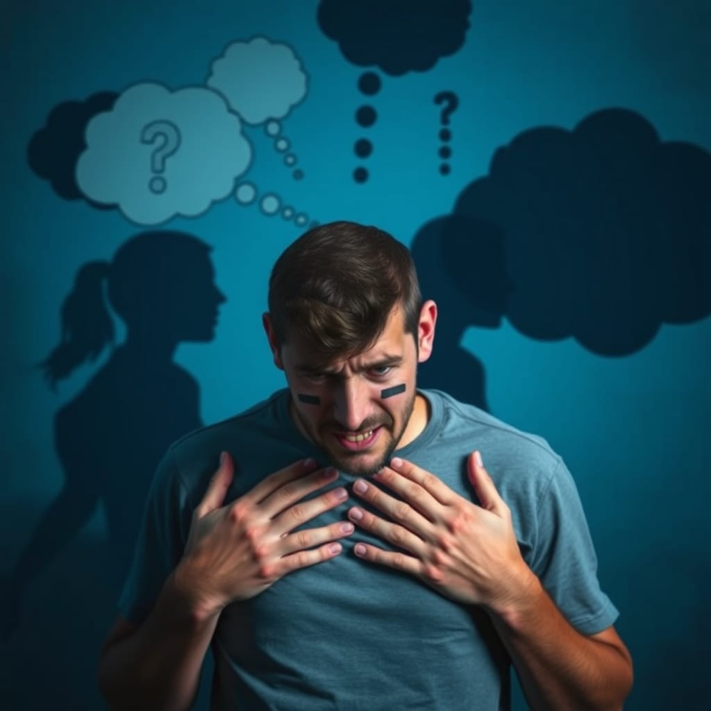

Atenção: Esta página é apenas informativa; todo o conteúdo foi elaborado com base em pesquisas e não substitui o diagnóstico de um profissional da área de saúde. Para obter mais informações sobre os temas abordados, CLIQUE nos links abaixo das descrições para ser redirecionado às páginas com detalhes adicionais.
CONHEÇA AS DOENÇAS MAIS COMUNS SOBRE SAUDE-MENTAL
Transtornos de Ansiedade
Transtornos de ansiedade são condições psicológicas caracterizadas por sentimentos intensos,persistentes e excessivos de preocupação e medo que podem interferir na vida diária.Estes transtornos incluem várias condições, como o transtorno de ansiedade generalizada, onde a pessoa experimenta preocupações constantes e incontroláveis sobre diferentes aspectos da vida; o transtorno de pânico, que provoca ataques de pânico repentinos e intensos com sintomas físicos como palpitações e falta de ar; e as fobias específicas, medos intensos de situações ou objetos particulares, como alturas ou espaços fechados. A ansiedade vai além de uma preocupação comum,é crônica e muitas vezes incapacitante, afetando a capacidade da pessoa de realizar tarefas diárias,interagir socialmente e manter a qualidade de vida.
Clique e conheça a fonteTranstornos de Humor
Transtornos de humor são condições de saúde mental que envolvem alterações intensas e prolongadas no estado emocional, afetando diretamente a forma como a pessoa se sente, pensa e lida com a vida cotidiana. Os dois tipos mais comuns são a depressão e o transtorno bipolar. Na depressão, a pessoa experimenta tristeza profunda, perda de interesse nas atividades que antes gostava e baixa autoestima, geralmente acompanhados de cansaço e pensamentos negativos. Já no transtorno bipolar, ocorrem oscilações extremas de humor, alternando entre episódios de euforia e energia elevada (mania) e períodos de depressão intensa. Esses transtornos impactam a vida pessoal, profissional e social, e frequentemente necessitam de tratamento para que a pessoa consiga estabilizar o humor e melhorar sua qualidade de vida.
Clique e conheça a fonteTranstornos Psicóticos
Transtornos psicóticos são condições de saúde mental caracterizadas pela perda de contato com a realidade, o que resulta em uma percepção alterada do mundo. As pessoas que vivem com esses transtornos experimentam sintomas como alucinações (percepção de coisas que não estão presentes, como ouvir vozes) e delírios (crenças falsas, como acreditar que estão sendo perseguidas ou que possuem poderes especiais). A esquizofrenia é um dos exemplos mais conhecidos de transtorno psicótico e geralmente envolve sintomas como pensamento desorganizado e comportamento anormal. Esses transtornos afetam profundamente a capacidade de uma pessoa de interagir com os outros e de realizar tarefas diárias, tornando o tratamento fundamental para melhorar a qualidade de vida e ajudar no controle dos sintomas.
Clique e conheça a fonteTranstornos Alimentares
Transtornos alimentares são condições psicológicas complexas que afetam os hábitos alimentares, a relação com a comida e a percepção do corpo, muitas vezes acompanhadas por consequências físicas graves. Entre os mais comuns estão a anorexia nervosa, caracterizada por uma restrição extrema de calorias e um medo intenso de ganhar peso; a bulimia nervosa, onde ocorrem episódios de compulsão alimentar seguidos de comportamentos compensatórios, como vômito; e o transtorno de compulsão alimentar, que envolve episódios recorrentes de ingestão exagerada de alimentos sem controle. Esses transtornos são frequentemente motivados por uma distorção da autoimagem e por pressões sociais, e podem levar a sérios problemas de saúde física e mental, exigindo uma abordagem de tratamento abrangente que inclua apoio psicológico, nutricional e, muitas vezes, acompanhamento médico.
Clique e conheça a fonteTranstornos de Personalidade
Transtornos de personalidade são condições de saúde mental caracterizadas por padrões duradouros e inflexíveis de pensamento, comportamento e percepção que diferem significativamente das expectativas sociais e causam dificuldades nos relacionamentos e no funcionamento diário. As pessoas com esses transtornos geralmente apresentam respostas emocionais intensas e comportamentos impulsivos ou rígidos, o que pode dificultar a adaptação a diferentes situações e a interação com os outros. Entre os tipos mais comuns estão o transtorno de personalidade borderline, que envolve instabilidade emocional e medo de abandono, e o transtorno de personalidade narcisista, marcado por uma necessidade extrema de admiração e baixa empatia pelos outros. Estes transtornos geralmente se desenvolvem na adolescência ou início da idade adulta e requerem tratamento especializado para ajudar a pessoa a desenvolver estratégias saudáveis de convivência e adaptação.
Clique e conheça a fonteTranstornos Neurodesenvolvimentais
Transtornos neurodesenvolvimentais são condições que afetam o desenvolvimento do sistema nervoso, manifestando-se desde a infância e impactando áreas como cognição, comportamento, linguagem e habilidades motoras. Estes transtornos incluem, entre outros, o Transtorno do Espectro Autista (TEA), caracterizado por dificuldades na interação social e comportamentos repetitivos; e o Transtorno de Déficit de Atenção e Hiperatividade (TDAH), que envolve problemas de atenção e hiperatividade-impulsividade. Os transtornos neurodesenvolvimentais variam em intensidade e manifestação, e as pessoas que os apresentam frequentemente precisam de suporte educativo e terapêutico para alcançar o máximo de seu potencial e adaptar-se às demandas sociais e escolares. O tratamento geralmente é multidisciplinar, envolvendo psicólogos, terapeutas ocupacionais, educadores e, em alguns casos, medicação.
Clique e conheça a fonteTranstorno Obsessivo-Compulsivo (TOC)
O Transtorno Obsessivo-Compulsivo (TOC) é uma condição de saúde mental caracterizada pela presença de obsessões e compulsões que causam ansiedade e interferem na vida diária. As obsessões são pensamentos, imagens ou impulsos intrusivos e recorrentes, como o medo de contaminação ou de que algo ruim aconteça, que a pessoa sente serem incontroláveis. Para aliviar a ansiedade gerada por essas obsessões, a pessoa realiza compulsões, que são comportamentos repetitivos ou rituais, como lavar as mãos constantemente, verificar portas ou contar objetos. Embora a pessoa geralmente reconheça que esses pensamentos e comportamentos são irracionais, sente-se incapaz de interrompê-los sem um grande desconforto. O TOC pode impactar profundamente a qualidade de vida, mas o tratamento, que inclui terapia e, em alguns casos, medicação, ajuda a reduzir os sintomas e melhorar o bem-estar.
Clique e conheça a fonteTranstornos do Sono
Transtornos do sono são condições que afetam a qualidade, a quantidade e o padrão do sono, prejudicando o descanso e o bem-estar geral da pessoa. Esses transtornos incluem insônia, apneia do sono, narcolepsia, síndrome das pernas inquietas e distúrbios do ritmo circadiano, entre outros. Eles podem resultar em dificuldade para adormecer, permanecer dormindo ou acordar muito cedo, além de causar sonolência diurna excessiva. Fatores como estresse, ansiedade, hábitos de sono inadequados e condições médicas podem contribuir para o desenvolvimento desses transtornos. O tratamento pode envolver mudanças no estilo de vida, terapia cognitivo-comportamental e, em alguns casos, medicação.
Clique e conheça a fonteTranstorno de Estresse Pós-Traumático (TEPT)
O Transtorno de Estresse Pós-Traumático (TEPT) é uma condição de saúde mental que pode se desenvolver após a vivência de um evento traumático, como um acidente, agressão, desastre natural ou combate militar. Os sintomas incluem reviver o trauma por meio de flashbacks ou pesadelos, evitação de situações que lembrem o evento, alterações de humor e cognição, além de hiperatividade e reatividade emocional, como irritabilidade e dificuldades de concentração. O TEPT pode impactar significativamente a vida diária da pessoa, afetando relacionamentos e desempenho no trabalho. O tratamento frequentemente inclui terapia psicológica, como a terapia cognitivo-comportamental, e pode envolver o uso de medicamentos para ajudar a controlar os sintomas.
Clique e conheça a fonte